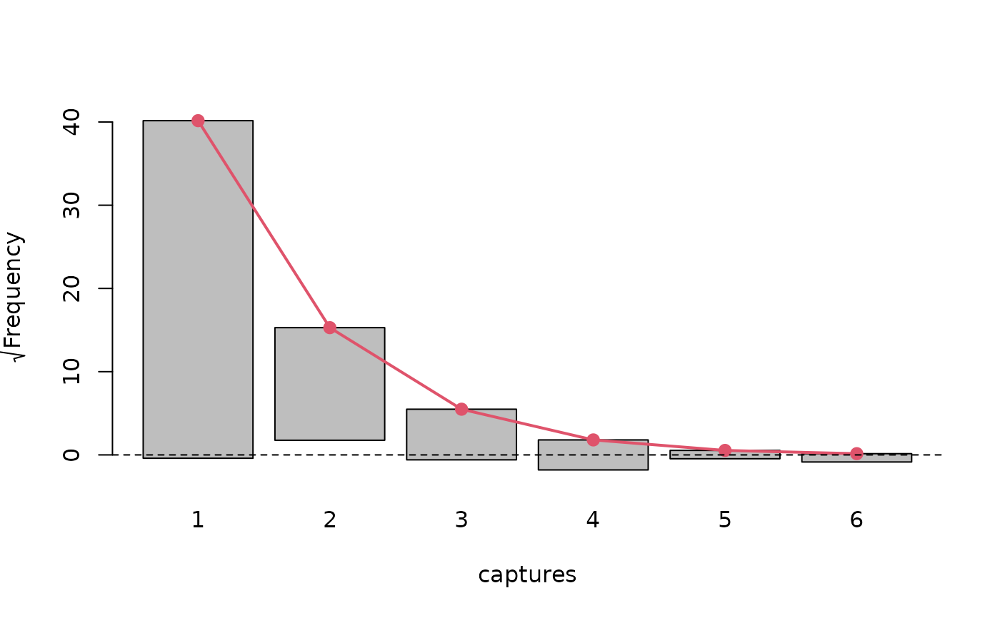

estimatePopsize first fits appropriate (v)glm model and
then estimates full (observed and unobserved) population size.
In this types of models it is assumed that the response vector
(i.e. the dependent variable) corresponds to the number of times a given unit
was observed in the source.
Population size is then usually estimated by Horvitz-Thompson type estimator:
N = _k=1^NI_kP(Y_k>0) = _k=1^N_obs11-P(Y_k=0)
where I_k=I_Y_k > 0 are indicator variables, with value 1 if kth unit was observed at least once and 0 otherwise.
Usage
estimatePopsize(formula, ...)
# Default S3 method
estimatePopsize(
formula,
data,
model = c("ztpoisson", "ztnegbin", "ztgeom", "zotpoisson", "ztoipoisson",
"oiztpoisson", "ztHurdlepoisson", "Hurdleztpoisson", "zotnegbin", "ztoinegbin",
"oiztnegbin", "ztHurdlenegbin", "Hurdleztnegbin", "zotgeom", "ztoigeom", "oiztgeom",
"ztHurdlegeom", "ztHurdlegeom", "zelterman", "chao"),
weights = NULL,
subset = NULL,
naAction = NULL,
method = c("optim", "IRLS"),
popVar = c("analytic", "bootstrap", "noEst"),
controlMethod = NULL,
controlModel = NULL,
controlPopVar = NULL,
modelFrame = TRUE,
x = FALSE,
y = TRUE,
contrasts = NULL,
ratioReg = FALSE,
offset,
...
)Arguments
- formula
a formula for the model to be fitted, only applied to the "main" linear predictor. Only single response models are available.
- ...
additional optional arguments passed to other methods eg.
estimatePopsizeFit.- data
a data frame or object coercible to data.frame class containing data for the regression and population size estimation.
- model
a model for regression and population estimate full description in
singleRmodels().- weights
an optional object of prior weights used in fitting the model. Can be used to specify number of occurrences of rows in data see
controlModel()- subset
a logical vector indicating which observations should be used in regression and population size estimation. It will be evaluated on
dataargument provided on call.- naAction
Not yet implemented.
- method
a method for fitting values currently supported: iteratively reweighted least squares (
IRLS) and maximum likelihood (optim).- popVar
a method of constructing confidence interval and estimating the standard error either analytic or bootstrap. Bootstrap confidence interval type may be specified in
controlPopVar.There is also the third possible value ofnoEstwhich skips the population size estimate all together.- controlMethod
a list indicating parameters to use in fitting the model may be constructed with
singleRcapture::controlMethodfunction. More information included incontrolMethod().- controlModel
a list indicating additional formulas for regression (like formula for inflation parameter/dispersion parameter) may be constructed with
singleRcapture::controlModelfunction. More information will eventually be included incontrolModel().- controlPopVar
a list indicating parameters to use in estimating variance of population size estimation may be constructed with
singleRcapture::controlPopVarfunction. More information included incontrolPopVar().- modelFrame, x, y
logical values indicating whether to return model matrix, dependent vector and model matrix as a part of output.
- contrasts
not yet implemented.
- ratioReg
Not yet implemented
- offset
a matrix of offset values with the number of columns matching the number of distribution parameters providing offset values to each of linear predictors.
Value
Returns an object of class c("singleRStaticCountData", "singleR", "glm", "lm")
with type list containing:
y– Vector of dependent variable if specified at function call.X– Model matrix if specified at function call.formula– A list with formula provided on call and additional formulas specified incontrolModel.call– Call matching original input.coefficients– A vector of fitted coefficients of regression.control– A list of control parameters forcontrolMethodandcontrolModel,controlPopVaris included in populationSize.model– Model which estimation of population size and regression was built, object of class family.deviance– Deviance for the model.priorWeights– Prior weight provided on call.weights– IfIRLSmethod of estimation was chosen weights returned byIRLS, otherwise same aspriorWeights.residuals– Vector of raw residuals.logL– Logarithm likelihood obtained at final iteration.iter– Numbers of iterations performed in fitting or ifstats::optimwas used number of call to loglikelihood function.dfResiduals– Residual degrees of freedom.dfNull– Null degrees of freedom.fittValues– Data frame of fitted values for both mu (the expected value) and lambda (Poisson parameter).populationSize– A list containing information of population size estimate.modelFrame– Model frame if specified at call.linearPredictors– Vector of fitted linear predictors.sizeObserved– Number of observations in original model frame.terms– terms attribute of model frame used.contrasts– contrasts specified in function call.naAction– naAction used.which– list indicating which observations were used in regression/population size estimation.fittingLog– log of fitting information for"IRLS"fitting if specified incontrolMethod.
Details
The generalized linear model is characterized by equation
=X
where X is the (lm) model matrix.
The vector generalized linear model is similarly characterized by equations
_k=X_k_k
where X_k is a (lm) model
matrix constructed from appropriate formula
(specified in controlModel parameter).
The is then a vector constructed as:
=pmatrix
_1
_2
_p
pmatrix^T
and in cases of models in our package the (vlm) model matrix is constructed as a block matrix:
X_vlm=
pmatrix
X_1 & 0 & &0
0 & X_2 & &0
& & &
0 & 0 & &X_p
pmatrix
this differs from convention in VGAM package (if we only consider our
special cases of vglm models) but this is just a convention and does not
affect the model, this convention is taken because it makes fitting with
IRLS (explanation of algorithm in estimatePopsizeFit()) algorithm easier.
(If constraints matrixes in vglm match the ones we implicitly
use the vglm model matrix differs with respect to order of
kronecker multiplication of X and constraints.)
In this package we use observed likelihood to fit regression models.
As mentioned above usually the population size estimation is done via: N = _k=1^NI_kP(Y_k>0) = _k=1^N_obs11-P(Y_k=0)
where I_k=I_Y_k > 0 are indicator variables, with value 1 if kth unit was observed at least once and 0 otherwise. The P(Y_k>0) are estimated by maximum likelihood.
The following assumptions are usually present when using the method of estimation described above:
The specified regression model is correct. This entails linear relationship between independent variables and dependent ones and dependent variable being generated by appropriate distribution.
No unobserved heterogeneity. If this assumption is broken there are some possible (admittedly imperfect) workarounds see details in
singleRmodels().The population size is constant in relevant time frame.
Depending on confidence interval construction (asymptotic) normality of N statistic is assumed.
There are two ways of estimating variance of estimate N,
the first being "analytic" usually done by application of
law of total variance to N:
var(N)=E(var (N|I_1,...,I_n))+ var(E(N|I_1,...,I_n))
and then by method to N|I_1,... I_N:
E(var (N|I_1,...,I_n))= .((N|I_1,...,I_N))^T cov() ((N|I_1,...,I_N)) |_=
and the var(E(N|I_1,...,I_n)) term may be derived analytically (if we assume independence of observations) since N|I_1,...,I_n is just a constant.
In general this gives us:
aligned
var(E(N|I_1,...,I_n))&=
var(_k=1^NI_kP(Y_k>0))
&=_k=1^Nvar(I_kP(Y_k>0))
&=_k=1^N1P(Y_k>0)^2var(I_k)
&=_k=1^N1P(Y_k>0)^2P(Y_k>0)(1-P(Y_k>0))
&=_k=1^N1P(Y_k>0)(1-P(Y_k>0))
&_k=1^NI_kP(Y_k>0)^2(1-P(Y_k>0))
&=_k=1^N_obs1-P(Y_k>0)P(Y_k>0)^2
aligned
Where the approximation on 6th line appears because in 5th line we sum over all units, that includes unobserved units, since I_k are independent and I_k b(P(Y_k>0)) the 6th line is an unbiased estimator of the 5th line.
The other method for estimating variance is "bootstrap", but since
N_obs=_k=1^NI_k is also a random variable bootstrap
will not be as simple as just drawing N_obs units from data
with replacement and just computing N.
Method described above is referred to in literature as "nonparametric"
bootstrap (see controlPopVar()), due to ignoring variability in observed
sample size it is likely to underestimate variance.
A more sophisticated bootstrap procedure may be described as follows:
Compute the probability distribution as: f_0N, f_1N, ..., f_yN where f_n denotes observed marginal frequency of units being observed exactly n times.
Draw N units from the distribution above (if N is not an integer than draw N + b(N-N)), where is the floor function.
Truncated units with y=0.
If there are covariates draw them from original data with replacement from uniform distribution. For example if unit drawn to new data has y=2 choose one of covariate vectors from original data that was associated with unit for which was observed 2 times.
Regress y_new on X_vlm new and obtain _new, with starting point to make it slightly faster, use them to compute N_new.
Repeat 2-5 unit there are at least
Bstatistics are obtained.Compute confidence intervals based on
alphaandconfTypespecified incontrolPopVar().
To do step 1 in procedure above it is convenient to first draw binary vector of length N + b(N-N) with probability 1-f_0N, sum elements in that vector to determine the sample size and then draw sample of this size uniformly from the data.
This procedure is known in literature as "semiparametric" bootstrap
it is necessary to assume that the have a correct estimate
N in order to use this type of bootstrap.
Lastly there is "paramteric" bootstrap where we assume that the
probabilistic model used to obtain N is correct the
bootstrap procedure may then be described as:
Draw N + b(N-N) covariate information vectors with replacement from data according to probability distribution that is proportional to: N_k, where N_k is the contribution of kth unit i.e. 1P(Y_k>0).
Determine matrix using estimate .
Generate y (dependent variable) vector using and probability mass function associated with chosen model.
Truncated units with y=0 and construct y_new and X_vlm new.
Regress y_new on X_vlm new and obtain _new use them to compute N_new.
Repeat 1-5 unit there are at least
Bstatistics are obtained.Compute confidence intervals based on
alphaandconfTypespecified incontrolPopVar()
It is also worth noting that in the "analytic" method estimatePopsize
only uses "standard" covariance matrix estimation. It is possible that improper
covariance matrix estimate is the only part of estimation that has its assumptions
violated. In such cases post-hoc procedures are implemented in this package
to address this issue.
Lastly confidence intervals for N are computed (in analytic case) either by assuming that it follows a normal distribution or that variable (N-N) follows a normal distribution.
These estimates may be found using either summary.singleRStaticCountData
method or popSizeEst.singleRStaticCountData function. They're labelled as
normal and logNormal respectively.
References
General single source capture recapture literature:
Zelterman, Daniel (1988). ‘Robust estimation in truncated discrete distributions with application to capture-recapture experiments’. In: Journal of statistical planning and inference 18.2, pp. 225–237.
Heijden, Peter GM van der et al. (2003). ‘Point and interval estimation of the population size using the truncated Poisson regression model’. In: Statistical Modelling 3.4, pp. 305–322. doi: 10.1191/1471082X03st057oa.
Cruyff, Maarten J. L. F. and Peter G. M. van der Heijden (2008). ‘Point and Interval Estimation of the Population Size Using a Zero-Truncated Negative Binomial Regression Model’. In: Biometrical Journal 50.6, pp. 1035–1050. doi: 10.1002/bimj.200810455
Böhning, Dankmar and Peter G. M. van der Heijden (2009). ‘A covariate adjustment for zero-truncated approaches to estimating the size of hidden and elusive populations’. In: The Annals of Applied Statistics 3.2, pp. 595–610. doi: 10.1214/08-AOAS214.
Böhning, Dankmar, Alberto Vidal-Diez et al. (2013). ‘A Generalization of Chao’s Estimator for Covariate Information’. In: Biometrics 69.4, pp. 1033– 1042. doi: 10.1111/biom.12082
Böhning, Dankmar and Peter G. M. van der Heijden (2019). ‘The identity of the zero-truncated, one-inflated likelihood and the zero-one-truncated likelihood for general count densities with an application to drink-driving in Britain’. In: The Annals of Applied Statistics 13.2, pp. 1198–1211. doi: 10.1214/18-AOAS1232.
Navaratna WC, Del Rio Vilas VJ, Böhning D. Extending Zelterman's approach for robust estimation of population size to zero-truncated clustered Data. Biom J. 2008 Aug;50(4):584-96. doi: 10.1002/bimj.200710441.
Böhning D. On the equivalence of one-inflated zero-truncated and zero-truncated one-inflated count data likelihoods. Biom J. 2022 Aug 15. doi: 10.1002/bimj.202100343.
Böhning, D., Friedl, H. Population size estimation based upon zero-truncated, one-inflated and sparse count data. Stat Methods Appl 30, 1197–1217 (2021). doi: 10.1007/s10260-021-00556-8
Bootstrap:
Zwane, PGM EN and Van der Heijden, Implementing the parametric bootstrap in capture-recapture models with continuous covariates 2003 Statistics & probability letters 65.2 pp 121-125
Norris, James L and Pollock, Kenneth H Including model uncertainty in estimating variances in multiple capture studies 1996 in Environmental and Ecological Statistics 3.3 pp 235-244
Vector generalized linear models:
Yee, T. W. (2015). Vector Generalized Linear and Additive Models: With an Implementation in R. New York, USA: Springer. ISBN 978-1-4939-2817-0.
See also
stats::glm() – For more information on generalized linear models.
stats::optim() – For more information on optim function used in
optim method of fitting regression.
controlMethod() – For control parameters related to regression.
controlPopVar() – For control parameters related to population size estimation.
controlModel() – For control parameters related to model specification.
estimatePopsizeFit() – For more information on fitting procedure in
esitmate_popsize.
popSizeEst() redoPopEstimation() – For extracting population size
estimation results are applying post-hoc procedures.
summary.singleRStaticCountData() – For summarizing important information about the
model and population size estimation results.
marginalFreq() – For information on marginal frequencies and comparison
between observed and fitted quantities.
VGAM::vglm() – For more information on vector generalized linear models.
singleRmodels() – For description of various models.
Examples
# \donttest{
# Model from 2003 publication
# Point and interval estimation of the
# population size using the truncated Poisson regression mode
# Heijden, Peter GM van der et al. (2003)
model <- estimatePopsize(
formula = capture ~ gender + age + nation,
data = netherlandsimmigrant,
model = ztpoisson
)
summary(model)
#>
#> Call:
#> estimatePopsize.default(formula = capture ~ gender + age + nation,
#> data = netherlandsimmigrant, model = ztpoisson)
#>
#> Pearson Residuals:
#> Min. 1st Qu. Median Mean 3rd Qu. Max.
#> -0.486442 -0.486442 -0.298080 0.002093 -0.209444 13.910844
#>
#> Coefficients:
#> -----------------------
#> For linear predictors associated with: lambda
#> Estimate Std. Error z value P(>|z|)
#> (Intercept) -1.3411 0.2149 -6.241 4.35e-10 ***
#> gendermale 0.3972 0.1630 2.436 0.014832 *
#> age>40yrs -0.9746 0.4082 -2.387 0.016972 *
#> nationAsia -1.0926 0.3016 -3.622 0.000292 ***
#> nationNorth Africa 0.1900 0.1940 0.979 0.327398
#> nationRest of Africa -0.9106 0.3008 -3.027 0.002468 **
#> nationSurinam -2.3364 1.0136 -2.305 0.021159 *
#> nationTurkey -1.6754 0.6028 -2.779 0.005445 **
#> ---
#> Signif. codes: 0 ‘***’ 0.001 ‘**’ 0.01 ‘*’ 0.05 ‘.’ 0.1 ‘ ’ 1
#>
#> AIC: 1712.901
#> BIC: 1757.213
#> Residual deviance: 1128.553
#>
#> Log-likelihood: -848.4504 on 1872 Degrees of freedom
#> Number of iterations: 8
#> -----------------------
#> Population size estimation results:
#> Point estimate 12690.35
#> Observed proportion: 14.8% (N obs = 1880)
#> Std. Error 2808.169
#> 95% CI for the population size:
#> lowerBound upperBound
#> normal 7186.444 18194.26
#> logNormal 8431.275 19718.32
#> 95% CI for the share of observed population:
#> lowerBound upperBound
#> normal 10.332927 26.16037
#> logNormal 9.534281 22.29793
# Graphical presentation of model fit
plot(model, "rootogram")

# Statistical test
# see documentation for summary.singleRmargin
summary(marginalFreq(model), df = 1, "group")
#> Test for Goodness of fit of a regression model:
#>
#> Test statistics df P(>X^2)
#> Chi-squared test 50.06 1 1.5e-12
#> G-test 34.31 1 4.7e-09
#>
#> --------------------------------------------------------------
#> Cells with fitted frequencies of < 5 have been grouped
#> Names of cells used in calculating test(s) statistic: 1 2 3
# We currently support 2 methods of numerical fitting
# (generalized) IRLS algorithm and via stats::optim
# the latter one is faster when fitting negative binomial models
# (and only then) due to IRLS having to numerically compute
# (expected) information matrixes, optim is also less reliable when
# using alphaFormula argument in controlModel
modelNegBin <- estimatePopsize(
formula = TOTAL_SUB ~ .,
data = farmsubmission,
model = ztnegbin,
method = "optim"
)
summary(modelNegBin)
#>
#> Call:
#> estimatePopsize.default(formula = TOTAL_SUB ~ ., data = farmsubmission,
#> model = ztnegbin, method = "optim")
#>
#> Pearson Residuals:
#> Min. 1st Qu. Median Mean 3rd Qu. Max.
#> -0.71322 -0.33627 -0.14256 0.00001 0.14745 7.01427
#>
#> Coefficients:
#> -----------------------
#> For linear predictors associated with: lambda
#> Estimate Std. Error z value P(>|z|)
#> (Intercept) -3.17536 0.25947 -12.238 < 2e-16 ***
#> log_size 0.63932 0.01771 36.102 < 2e-16 ***
#> log_distance -0.07935 0.02228 -3.561 0.000369 ***
#> C_TYPEDairy 0.65919 0.03412 19.317 < 2e-16 ***
#> -----------------------
#> For linear predictors associated with: alpha
#> Estimate Std. Error z value P(>|z|)
#> (Intercept) 0.58238 0.07299 7.979 1.48e-15 ***
#> ---
#> Signif. codes: 0 ‘***’ 0.001 ‘**’ 0.01 ‘*’ 0.05 ‘.’ 0.1 ‘ ’ 1
#>
#> AIC: 34538.73
#> BIC: 34575.71
#> Residual deviance: 17730.07
#>
#> Log-likelihood: -17264.37 on 24067 Degrees of freedom
#> Number of calls to log-likelihood function: 654
#> -----------------------
#> Population size estimation results:
#> Point estimate 41019.07
#> Observed proportion: 29.3% (N obs = 12036)
#> Std. Error 1888.039
#> 95% CI for the population size:
#> lowerBound upperBound
#> normal 37318.59 44719.56
#> logNormal 37548.53 44961.73
#> 95% CI for the share of observed population:
#> lowerBound upperBound
#> normal 26.91440 32.25203
#> logNormal 26.76943 32.05452
summary(marginalFreq(modelNegBin))
#> Test for Goodness of fit of a regression model:
#>
#> Test statistics df P(>X^2)
#> Chi-squared test 30.93 26 0.23
#> G-test 19.12 26 0.83
#>
#> --------------------------------------------------------------
#> Cells with fitted frequencies of < 5 have been dropped
#> Names of cells used in calculating test(s) statistic: 1 2 3 4 5 6 7 8 9 10 11 12 13 14 15 16 17 18 19
# More advanced call that specifies additional formula and shows
# in depth information about fitting procedure
pseudoHurdleModel <- estimatePopsize(
formula = capture ~ nation + age,
data = netherlandsimmigrant,
model = Hurdleztgeom,
method = "IRLS",
controlMethod = controlMethod(verbose = 5),
controlModel = controlModel(piFormula = ~ gender)
)
#> Iteration number 1 log-likelihood: -846.77533
#> Parameter vector: -1.52435898 -0.62008047 0.16074142 -0.49971856 -0.85750609 -0.78860226 -0.42067526 -0.44312806 -0.70241852
#> log-likelihood reduction: Inf
#> Value of gradient at current step:
#> 142.04204576 8.81177229 108.34506498 9.81769037 -0.39315787 1.30854693 2.40548998 -74.87532567 -61.35856914
#> Algorithm will terminate if one of following conditions will be met:
#> The increase to minus log-likelihood will be bellow chosen value of epsilon 1e-08
#> Maximum change to the vector of regression parameters will be bellow the chosen value of epsilon.
#> At current step the highest change was: 1.524359
#> ----
#> Iteration number 2 log-likelihood: -828.37292
#> Parameter vector: -1.11072318 -0.66579168 0.16032836 -0.51705318 -1.27720523 -0.93384649 -0.55851513 -0.52578104 -0.41829231
#> log-likelihood reduction: 18.402407
#> Value of gradient at current step:
#> -30.198518684 -2.367348700 -20.882807839 -2.990134863 -0.033406007 -0.236178150 -0.291286777 12.908733472 8.061651997
#> Algorithm will terminate if one of following conditions will be met:
#> The increase to minus log-likelihood will be bellow chosen value of epsilon 1e-08
#> Maximum change to the vector of regression parameters will be bellow the chosen value of epsilon.
#> At current step the highest change was: 0.41969914
#> ----
#> Iteration number 3 log-likelihood: -827.03041
#> Parameter vector: -1.26212005 -0.65481997 0.16367571 -0.51638838 -1.22088469 -0.89969898 -0.52141633 -0.61358371 -0.51802941
#> log-likelihood reduction: 1.3425075
#> Value of gradient at current step:
#> -0.399477106 -0.125534668 -0.025207083 -0.124263770 -0.012272383 -0.001036293 -0.037255028 -0.402440790 -0.559697165
#> Algorithm will terminate if one of following conditions will be met:
#> The increase to minus log-likelihood will be bellow chosen value of epsilon 1e-08
#> Maximum change to the vector of regression parameters will be bellow the chosen value of epsilon.
#> At current step the highest change was: 0.15139687
#> ----
#> Iteration number 4 log-likelihood: -827.01868
#> Parameter vector: -1.28179260 -0.65559457 0.16445074 -0.51702724 -1.22154349 -0.89783555 -0.52232876 -0.64032726 -0.52639838
#> log-likelihood reduction: 0.011729135
#> Value of gradient at current step:
#> 0.01965800195 -0.00376668640 0.02342526604 0.00085753707 -0.00131148043 0.00040402353 -0.00468611749 -0.01113423867 -0.00978879207
#> Algorithm will terminate if one of following conditions will be met:
#> The increase to minus log-likelihood will be bellow chosen value of epsilon 1e-08
#> Maximum change to the vector of regression parameters will be bellow the chosen value of epsilon.
#> At current step the highest change was: 0.026743552
#> ----
#> Iteration number 5 log-likelihood: -827.01868
#> Parameter vector: -1.28177518 -0.65568959 0.16449297 -0.51701807 -1.22190483 -0.89779857 -0.52262758 -0.64032669 -0.52640250
#> log-likelihood reduction: 0.0000018094989
#> Value of gradient at current step:
#> -0.0001561899387 0.0000207886459 -0.0000413107753 -0.0000259493362 0.0000040518562 -0.0000068413444 -0.0000222504320 0.0000011784080 0.0000010016067
#> Algorithm will terminate if one of following conditions will be met:
#> The increase to minus log-likelihood will be bellow chosen value of epsilon 1e-08
#> Maximum change to the vector of regression parameters will be bellow the chosen value of epsilon.
#> At current step the highest change was: 0.00036133989
#> ----
#> Iteration number 6 log-likelihood: -827.01868
#> Parameter vector: -1.28177959 -0.65568717 0.16449471 -0.51701668 -1.22190170 -0.89779724 -0.52262830 -0.64033172 -0.52640214
#> log-likelihood reduction: 0.00000000032207481
#> Value of gradient at current step:
#> 0.00000138172839925 -0.00000029541573543 0.00000194942825438 0.00000005064943620 -0.00000001912655101 0.00000005032669892 -0.00000167462238743 -0.00000000020190338 -0.00000000017657165
#> Algorithm will terminate if one of following conditions will be met:
#> The increase to minus log-likelihood will be bellow chosen value of epsilon 1e-08
#> Maximum change to the vector of regression parameters will be bellow the chosen value of epsilon.
#> At current step the highest change was: 0.0000050277134
#> ----
#> Value of analytically computed hessian at fitted regression coefficients:
#> [,1] [,2] [,3] [,4] [,5] [,6]
#> [1,] -600.647579 -45.430239 -437.78550 -46.3057511 -3.648625 -9.9715730
#> [2,] -45.430239 -45.430239 0.00000 0.0000000 0.000000 0.0000000
#> [3,] -437.785496 0.000000 -437.78550 0.0000000 0.000000 0.0000000
#> [4,] -46.305751 0.000000 0.00000 -46.3057511 0.000000 0.0000000
#> [5,] -3.648625 0.000000 0.00000 0.0000000 -3.648625 0.0000000
#> [6,] -9.971573 0.000000 0.00000 0.0000000 0.000000 -9.9715730
#> [7,] -17.976683 -2.320732 -11.24212 -0.6903141 -2.003224 -0.2486649
#> [8,] 328.022454 23.801161 241.35686 24.3769265 1.870670 5.1505625
#> [9,] 280.048801 20.260808 211.90055 19.7419682 1.462128 4.6637718
#> [,7] [,8] [,9]
#> [1,] -17.9766828 328.022454 280.048801
#> [2,] -2.3207316 23.801161 20.260808
#> [3,] -11.2421165 241.356859 211.900549
#> [4,] -0.6903141 24.376927 19.741968
#> [5,] -2.0032237 1.870670 1.462128
#> [6,] -0.2486649 5.150563 4.663772
#> [7,] -17.9766828 9.477666 8.492258
#> [8,] 9.4776658 -197.098079 -168.419176
#> [9,] 8.4922579 -168.419176 -168.419176
#> The matrix above has the following eigen values:
#> -3.121074 -6.868861 -9.331036 -16.61098 -18.10422 -33.99724 -45.94396 -112.7247 -1280.581
summary(pseudoHurdleModel)
#>
#> Call:
#> estimatePopsize.default(formula = capture ~ nation + age, data = netherlandsimmigrant,
#> model = Hurdleztgeom, method = "IRLS", controlMethod = controlMethod(verbose = 5),
#> controlModel = controlModel(piFormula = ~gender))
#>
#> Pearson Residuals:
#> Min. 1st Qu. Median Mean 3rd Qu. Max.
#> -0.428461 -0.428461 -0.288574 0.004918 -0.181672 13.696149
#>
#> Coefficients:
#> -----------------------
#> For linear predictors associated with: lambda
#> Estimate Std. Error z value P(>|z|)
#> (Intercept) -1.2818 0.1858 -6.899 5.22e-12 ***
#> nationAsia -0.6557 0.1994 -3.289 0.00101 **
#> nationNorth Africa 0.1645 0.1417 1.161 0.24561
#> nationRest of Africa -0.5170 0.1979 -2.612 0.00900 **
#> nationSurinam -1.2219 0.5552 -2.201 0.02775 *
#> nationTurkey -0.8978 0.3439 -2.611 0.00903 **
#> age>40yrs -0.5226 0.2469 -2.117 0.03429 *
#> -----------------------
#> For linear predictors associated with: pi
#> Estimate Std. Error z value P(>|z|)
#> (Intercept) -0.6403 0.2945 -2.174 0.02969 *
#> gendermale -0.5264 0.2043 -2.577 0.00996 **
#> ---
#> Signif. codes: 0 ‘***’ 0.001 ‘**’ 0.01 ‘*’ 0.05 ‘.’ 0.1 ‘ ’ 1
#>
#> AIC: 1672.037
#> BIC: 1721.889
#> Residual deviance: 1492.301
#>
#> Log-likelihood: -827.0187 on 3751 Degrees of freedom
#> Number of iterations: 6
#> -----------------------
#> Population size estimation results:
#> Point estimate 6446.833
#> Observed proportion: 29.2% (N obs = 1880)
#> Std. Error 1126.716
#> 95% CI for the population size:
#> lowerBound upperBound
#> normal 4238.511 8655.156
#> logNormal 4715.983 9234.051
#> 95% CI for the share of observed population:
#> lowerBound upperBound
#> normal 21.72116 44.35520
#> logNormal 20.35943 39.86443
# Assessing model fit
plot(pseudoHurdleModel, "rootogram")
 summary(marginalFreq(pseudoHurdleModel), "group", df = 1)
#> Test for Goodness of fit of a regression model:
#>
#> Test statistics df P(>X^2)
#> Chi-squared test 1.89 1 0.17
#> G-test 2.13 1 0.14
#>
#> --------------------------------------------------------------
#> Cells with fitted frequencies of < 5 have been grouped
#> Names of cells used in calculating test(s) statistic: 1 2 3 4
# A advanced input with additional information for fitting procedure and
# additional formula specification and different link for inflation parameter.
Model <- estimatePopsize(
formula = TOTAL_SUB ~ .,
data = farmsubmission,
model = oiztgeom(omegaLink = "cloglog"),
method = "IRLS",
controlMethod = controlMethod(
stepsize = .85,
momentumFactor = 1.2,
epsilon = 1e-10,
silent = TRUE
),
controlModel = controlModel(omegaFormula = ~ C_TYPE + log_size)
)
summary(marginalFreq(Model), df = 18 - length(Model$coefficients))
#> Test for Goodness of fit of a regression model:
#>
#> Test statistics df P(>X^2)
#> Chi-squared test 54.98 11 7.8e-08
#> G-test 23.06 11 1.7e-02
#>
#> --------------------------------------------------------------
#> Cells with fitted frequencies of < 5 have been dropped
#> Names of cells used in calculating test(s) statistic: 1 2 3 4 5 6 7 8 9 10 11 12 13 14 15 16 17 18
summary(Model)
#>
#> Call:
#> estimatePopsize.default(formula = TOTAL_SUB ~ ., data = farmsubmission,
#> model = oiztgeom(omegaLink = "cloglog"), method = "IRLS",
#> controlMethod = controlMethod(stepsize = 0.85, momentumFactor = 1.2,
#> epsilon = 1e-10, silent = TRUE), controlModel = controlModel(omegaFormula = ~C_TYPE +
#> log_size))
#>
#> Pearson Residuals:
#> Min. 1st Qu. Median Mean 3rd Qu. Max.
#> -0.891103 -0.644972 -0.443066 0.005967 0.295374 20.809832
#>
#> Coefficients:
#> -----------------------
#> For linear predictors associated with: lambda
#> Estimate Std. Error z value P(>|z|)
#> (Intercept) -2.76388 0.23858 -11.585 < 2e-16 ***
#> log_size 0.62734 0.01787 35.110 < 2e-16 ***
#> log_distance -0.07200 0.02004 -3.593 0.000327 ***
#> C_TYPEDairy 0.50965 0.04032 12.640 < 2e-16 ***
#> -----------------------
#> For linear predictors associated with: omega
#> Estimate Std. Error z value P(>|z|)
#> (Intercept) -5.0973 0.8268 -6.165 7.03e-10 ***
#> C_TYPEDairy -1.4002 0.3700 -3.784 0.000154 ***
#> log_size 0.4461 0.1330 3.354 0.000795 ***
#> ---
#> Signif. codes: 0 ‘***’ 0.001 ‘**’ 0.01 ‘*’ 0.05 ‘.’ 0.1 ‘ ’ 1
#>
#> AIC: 34579.91
#> BIC: 34631.68
#> Residual deviance: 12327.24
#>
#> Log-likelihood: -17282.96 on 24065 Degrees of freedom
#> Number of iterations: 13
#> -----------------------
#> Population size estimation results:
#> Point estimate 27249.03
#> Observed proportion: 44.2% (N obs = 12036)
#> Std. Error 972.0123
#> 95% CI for the population size:
#> lowerBound upperBound
#> normal 25343.92 29154.13
#> logNormal 25460.09 29276.36
#> 95% CI for the share of observed population:
#> lowerBound upperBound
#> normal 41.28402 47.49069
#> logNormal 41.11166 47.27399
# }
summary(marginalFreq(pseudoHurdleModel), "group", df = 1)
#> Test for Goodness of fit of a regression model:
#>
#> Test statistics df P(>X^2)
#> Chi-squared test 1.89 1 0.17
#> G-test 2.13 1 0.14
#>
#> --------------------------------------------------------------
#> Cells with fitted frequencies of < 5 have been grouped
#> Names of cells used in calculating test(s) statistic: 1 2 3 4
# A advanced input with additional information for fitting procedure and
# additional formula specification and different link for inflation parameter.
Model <- estimatePopsize(
formula = TOTAL_SUB ~ .,
data = farmsubmission,
model = oiztgeom(omegaLink = "cloglog"),
method = "IRLS",
controlMethod = controlMethod(
stepsize = .85,
momentumFactor = 1.2,
epsilon = 1e-10,
silent = TRUE
),
controlModel = controlModel(omegaFormula = ~ C_TYPE + log_size)
)
summary(marginalFreq(Model), df = 18 - length(Model$coefficients))
#> Test for Goodness of fit of a regression model:
#>
#> Test statistics df P(>X^2)
#> Chi-squared test 54.98 11 7.8e-08
#> G-test 23.06 11 1.7e-02
#>
#> --------------------------------------------------------------
#> Cells with fitted frequencies of < 5 have been dropped
#> Names of cells used in calculating test(s) statistic: 1 2 3 4 5 6 7 8 9 10 11 12 13 14 15 16 17 18
summary(Model)
#>
#> Call:
#> estimatePopsize.default(formula = TOTAL_SUB ~ ., data = farmsubmission,
#> model = oiztgeom(omegaLink = "cloglog"), method = "IRLS",
#> controlMethod = controlMethod(stepsize = 0.85, momentumFactor = 1.2,
#> epsilon = 1e-10, silent = TRUE), controlModel = controlModel(omegaFormula = ~C_TYPE +
#> log_size))
#>
#> Pearson Residuals:
#> Min. 1st Qu. Median Mean 3rd Qu. Max.
#> -0.891103 -0.644972 -0.443066 0.005967 0.295374 20.809832
#>
#> Coefficients:
#> -----------------------
#> For linear predictors associated with: lambda
#> Estimate Std. Error z value P(>|z|)
#> (Intercept) -2.76388 0.23858 -11.585 < 2e-16 ***
#> log_size 0.62734 0.01787 35.110 < 2e-16 ***
#> log_distance -0.07200 0.02004 -3.593 0.000327 ***
#> C_TYPEDairy 0.50965 0.04032 12.640 < 2e-16 ***
#> -----------------------
#> For linear predictors associated with: omega
#> Estimate Std. Error z value P(>|z|)
#> (Intercept) -5.0973 0.8268 -6.165 7.03e-10 ***
#> C_TYPEDairy -1.4002 0.3700 -3.784 0.000154 ***
#> log_size 0.4461 0.1330 3.354 0.000795 ***
#> ---
#> Signif. codes: 0 ‘***’ 0.001 ‘**’ 0.01 ‘*’ 0.05 ‘.’ 0.1 ‘ ’ 1
#>
#> AIC: 34579.91
#> BIC: 34631.68
#> Residual deviance: 12327.24
#>
#> Log-likelihood: -17282.96 on 24065 Degrees of freedom
#> Number of iterations: 13
#> -----------------------
#> Population size estimation results:
#> Point estimate 27249.03
#> Observed proportion: 44.2% (N obs = 12036)
#> Std. Error 972.0123
#> 95% CI for the population size:
#> lowerBound upperBound
#> normal 25343.92 29154.13
#> logNormal 25460.09 29276.36
#> 95% CI for the share of observed population:
#> lowerBound upperBound
#> normal 41.28402 47.49069
#> logNormal 41.11166 47.27399
# }